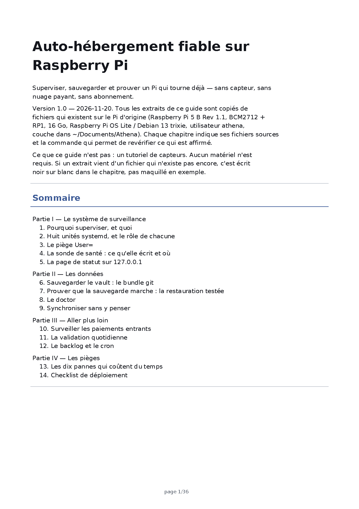

Preuve — Guide Pi
Une commande réelle par chapitre, rejouée à la construction de cette page.
Ce qui est exécuté
Le manifeste store/projets/guide-pi/preuve.yml rejoue une commande par
chapitre (14 chapitres), plus les deux vérificateurs du guide. Tout est exécuté
dans ~/Documents/Athena au moment où cette page est construite, avec un délai
maximal de 60 s par commande. Une commande qui échoue affiche son code de retour
et sa sortie — jamais un résultat inventé.
Les chapitres couverts : température et bridage (1), timers (2), User= et
unités en échec (3), sonde de santé (4), curl sur la boucle locale (5),
git bundle verify (6), restauration clone + fsck + empreinte (7), doctor (8),
commits et absence de secrets versionnés (9), surveillance des paiements (10),
rapport daté de la validation quotidienne (11), backlog (12), ports occupés (13),
contrôle final de la checklist (14).
Ce qui est compté
Trois suites de tests (test_sante.py, test_salle_controle.py,
test_surveillance.py), le nombre de relevés de santé et d’alertes en base, et
les empreintes des fichiers livrés (guide, PDF, scripts, extrait gratuit). Si la
sauvegarde cesse de passer, le doctor le dit et la page le montre.
Ce qui n’est pas rejoué
- le chapitre 11 est prouvé par le rapport daté de
validation_quotidienne.py, pas par une nouvelle exécution : ce script sonde le catalogue de modèles avec des identifiants, qui n’ont rien à faire dans une page publique ; - la comparaison octet à octet du chapitre 7 suppose le vault au même commit que
le bundle ; le manifeste rejoue clone +
fsck+ empreinte, pas cette comparaison ; wallet/verify-usdc.jsn’a pas été exécuté : aucune transaction à vérifier sur cette machine.
Les limites
En bas de page, neuf entrées. Elles reprennent les sept limites déclarées dans l’annexe du guide, plus les deux limites de replay ci-dessus. Un guide qui cache ses trous ne vaut pas son prix.
Tests
tests/test_sante.py
12 tests — code de retour 1
python3 -m unittest discover -s tests -q
~~~~~~~~~~~~~~~~^^^^^^^^^^^^^^^^^^^^^^^^^^^^^^^^^^^^^
AssertionError: '2026-11-26' != '2026-11-24'
- 2026-11-26
? ^
+ 2026-11-24
? ^
----------------------------------------------------------------------
Ran 996 tests in 27.073s
FAILED (failures=2, errors=13, skipped=2)tests/test_salle_controle.py
15 tests — OK
python3 -m unittest tests.test_salle_controle -q
----------------------------------------------------------------------
Ran 15 tests in 0.174s
OKtests/test_surveillance.py
5 tests — OK
python3 -m unittest tests.test_surveillance -q
soldes USDC : base 0.00 | eth 0.00
NOUVEAU PAIEMENT — USDC/Base : transaction 0xdef
soldes USDC : base 0.00 | eth 0.00
BTC ignoré : RPC indisponible
USDC/Base ignoré : RPC indisponible
USDC/Ethereum ignoré : RPC indisponible
USDC/Base ignoré : pop from empty list
USDC/Ethereum ignoré : pop from empty list
----------------------------------------------------------------------
Ran 5 tests in 0.009s
OKCompteurs
| Compteurs | valeur |
|---|---|
| Relevés de santé en base | 12641 |
| Alertes enregistrées | 12 |
Commandes
Ch. 1 — température et bridage, relus sur le Pi
vcgencmd measure_temp && vcgencmd get_throttled
temp=65.9'C
throttled=0x0Ch. 2 — les timers Athéna, avec leur prochaine échéance
systemctl list-timers 'athena-*' --all --no-pager
NEXT LEFT LAST PASSED UNIT ACTIVATES
Fri 2026-11-27 22:12:52 EST 25s Fri 2026-11-27 22:11:52 EST 34s ago athena-health.timer athena-health.service
Fri 2026-11-27 22:15:00 EST 2min 32s Fri 2026-11-27 22:12:00 EST 26s ago athena-flux.timer athena-flux.service
Fri 2026-11-27 22:18:34 EST 6min Fri 2026-11-27 22:03:34 EST 8min ago athena-gardien.timer athena-gardien.service
Fri 2026-11-27 23:12:55 EST 1h 0min Fri 2026-11-27 21:12:55 EST 59min ago athena-git-sync.timer athena-git-sync.service
Sat 2026-11-28 03:17:00 EST 5h 4min Fri 2026-11-27 03:17:00 EST 18h ago athena-vault-backup.timer athena-vault-backup.service
Sat 2026-11-28 04:47:00 EST 6h Fri 2026-11-27 04:47:03 EST 17h ago athena-site-maintenance.timer athena-site-maintenance.service
Sun 2026-11-29 04:17:00 EST 1 day 6h Sun 2026-11-22 04:17:11 EST - athena-vault-doctor.timer athena-vault-doctor.service
- - Fri 2026-11-27 22:00:04 EST 12min ago athena-llm-tourne.timer athena-llm-tourne.service
8 timers listed.Ch. 3 — User= explicite, et aucune unité en échec
systemctl show -p User --value athena-health.service && systemctl --failed --no-pager
athena
UNIT LOAD ACTIVE SUB DESCRIPTION
0 loaded units listed.Ch. 4 — la sonde de santé relue (24 h)
python3 sys/health_status.py
échantillons 24 h : 1386 événements throttle : 0
alertes récentes :
2026-11-27T16:51:56-05:00 wlan_weak -1000.0 dBm
2026-11-27T11:46:10-05:00 failed_units 1 unité(s) en échec
2026-11-26T09:12:52-05:00 failed_units 1 unité(s) en échec
2026-11-26T09:11:51-05:00 wlan_weak -1000.0 dBm
2026-11-25T20:25:01-05:00 failed_units 1 unité(s) en échec
2026-11-25T16:38:41-05:00 wlan_weak -1000.0 dBm
2026-11-25T16:38:41-05:00 ntp_unsynced NTP non synchronisé
2026-11-25T14:04:05-05:00 failed_units 1 unité(s) en échec
2026-11-24T09:12:43-05:00 failed_units 1 unité(s) en échec
2026-11-21T18:55:03-05:00 failed_units 1 unité(s) en échecCh. 5 — la page de statut répond sur la boucle locale
curl -s 127.0.0.1:8081/api/health
…
5:00", "kind": "wlan_weak", "detail": "-1000.0 dBm"}, {"ts": "2026-11-27T11:46:10-05:00", "kind": "failed_units", "detail": "1 unit\u00e9(s) en \u00e9chec"}, {"ts": "2026-11-26T09:12:52-05:00", "kind": "failed_units", "detail": "1 unit\u00e9(s) en \u00e9chec"}, {"ts": "2026-11-26T09:11:51-05:00", "kind": "wlan_weak", "detail": "-1000.0 dBm"}, {"ts": "2026-11-25T20:25:01-05:00", "kind": "failed_units", "detail": "1 unit\u00e9(s) en \u00e9chec"}, {"ts": "2026-11-25T16:38:41-05:00", "kind": "wlan_weak", "detail": "-1000.0 dBm"}, {"ts": "2026-11-25T16:38:41-05:00", "kind": "ntp_unsynced", "detail": "NTP non synchronis\u00e9"}, {"ts": "2026-11-25T14:04:05-05:00", "kind": "failed_units", "detail": "1 unit\u00e9(s) en \u00e9chec"}, {"ts": "2026-11-24T09:12:43-05:00", "kind": "failed_units", "detail": "1 unit\u00e9(s) en \u00e9chec"}, {"ts": "2026-11-21T18:55:03-05:00", "kind": "failed_units", "detail": "1 unit\u00e9(s) en \u00e9chec"}, {"ts": "2026-11-18T21:36:05-05:00", "kind": "failed_units", "detail": "1 unit\u00e9(s) en \u00e9chec"}, {"ts": "2026-11-18T15:46:54-05:00", "kind": "ntp_unsynced", "detail": "NTP non synchronis\u00e9"}], "db": "/home/athena/Documents/Athena/data/health.db"}Ch. 6 — le bundle du vault est vérifié, pas supposé
git bundle verify state/vault.bundle && tail -n 3 logs/vault_backup.log
The bundle contains these 2 refs:
695086d1a112a6b8f12837d9df973586e775baa6 refs/heads/main
695086d1a112a6b8f12837d9df973586e775baa6 HEAD
The bundle records a complete history.
The bundle uses this hash algorithm: sha1
[2026-11-27T21:15:25-05:00] bundle copié dans state/vault.bundle
[2026-11-27T21:15:25-05:00] sommes de contrôle : 11 fichiers vault
[2026-11-27T21:15:25-05:00] bundles conservés : 383
state/vault.bundle is okayCh. 7 — restauration réelle : clone du bundle, fsck, empreinte
d=$(mktemp -d) && git clone -q state/vault.bundle "$d/restau" && git -C "$d/restau" fsck --full && sha256sum "$d/restau/00_Journal/2026-11.md" && git -C "$d/restau" log -1 --format='%h %ad %s' --date=short && rm -rf "$d"
a35e814fb248e12ec47b04446a367ec739fe2d241d5090f07d1ec52bad77548c /home/athena/.hermes/profiles/athena/cache/scratch/tmp.qqWkwsvPZa/restau/00_Journal/2026-11.md
695086d 2026-11-27 auto: sauvegarde quotidienne 2026-11-27
hint: Using 'master' as the name for the initial branch. This default branch name
hint: is subject to change. To configure the initial branch name to use in all
hint: of your new repositories, which will suppress this warning, call:
hint:
hint: git config --global init.defaultBranch <name>
hint:
hint: Names commonly chosen instead of 'master' are 'main', 'trunk' and
hint: 'development'. The just-created branch can be renamed via this command:
hint:
hint: git branch -m <name>Ch. 8 — le doctor : intégrité du vault et des sauvegardes
bash sys/vault_doctor.sh
2026-11-27T16:51:56-05:00 wlan_weak -1000.0 dBm
2026-11-27T11:46:10-05:00 failed_units 1 unité(s) en échec
2026-11-26T09:12:52-05:00 failed_units 1 unité(s) en échec
2026-11-26T09:11:51-05:00 wlan_weak -1000.0 dBm
2026-11-25T20:25:01-05:00 failed_units 1 unité(s) en échec
2026-11-25T16:38:41-05:00 wlan_weak -1000.0 dBm
2026-11-25T16:38:41-05:00 ntp_unsynced NTP non synchronisé
2026-11-25T14:04:05-05:00 failed_units 1 unité(s) en échec
2026-11-24T09:12:43-05:00 failed_units 1 unité(s) en échec
2026-11-21T18:55:03-05:00 failed_units 1 unité(s) en échec
BILAN : OKCh. 9 — derniers commits, et aucun secret versionné
git log --oneline -3 && (git ls-files | grep -E 'secrets/|\.env|\.seed' || echo 'aucun secret versionné')
6383f5d rapports: quatre synthèses vérifiées des backlogs et de la suite
f8c810c rapports: générateur vérifié des trois backlogs et de la suite
845047a sauvegarde auto 2026-11-27 21:15
aucun secret versionnéCh. 10 — surveillance des paiements : passage réel, état relu
python3 sys/surveiller_paiements.py && cat data/paiements_etat.json
{
"btc_tx": 0,
"btc_recu": 0,
"usdc_txids_base": [],
"bloc_base": 63225873,
"solde_base": 0.0,
"usdc_txids_eth": [
"0x6d8c16b40c0c8cf08bff846e712c3a5ad9090fa539b01bf2cfa8bedbba78065f"
],
"bloc_eth": 26510951,
"solde_eth": 17.28
}Ch. 11 — validation quotidienne : le rapport daté qu'elle écrit
cat data/validation_quotidienne.txt
[OK] couche : commit — dernier commit il y a 0.0 h (Fri Nov 27 07:18:01 2026 -0500)
[OK] couche : poussée — [2026-11-27T07:18:02-05:00] poussé 0faecff
[OK] vault : rien d'en attente — propre
[OK] étude de marché : rapport à jour — rapport âgé de 2.5 h
MODÈLE
[OK] catalogue de modèles — 410 modèles
[OK] modèle par défaut — tencent/hy4-flash:free — 1,048,576 ctx, gratuit=True ; répond
[OK] fallback tencent/hy4-flash:free — 1,048,576 ctx
[OK] fallback tencent/hy4-flash:free — 1,048,576 ctx
Tout est en ordre.Ch. 12 — le backlog, source de vérité
python3 sys/backlog.py etat
backlog : 129 tâches — {'fait': 123, 'bloqué': 3, 'prêt': 3}
reste : 95 min (1.6 h)
prochaine : aucune (tout est fait ou bloqué)Ch. 13 — les ports occupés, relus avant de choisir le sien
ss -ltnp | grep -E ':8080|:8081'
LISTEN 0 5 127.0.0.1:8081 0.0.0.0:* users:(("python3",pid=1132,fd=3))
LISTEN 0 50 [::ffff:127.0.0.1]:8080 *:* users:(("signal-cli",pid=1408,fd=15))Ch. 14 — contrôle final de la checklist, en une ligne
systemctl --failed --no-pager && git bundle verify state/vault.bundle && curl -s -o /dev/null -w '%{http_code}\n' 127.0.0.1:8081/
UNIT LOAD ACTIVE SUB DESCRIPTION
0 loaded units listed.
The bundle contains these 2 refs:
695086d1a112a6b8f12837d9df973586e775baa6 refs/heads/main
695086d1a112a6b8f12837d9df973586e775baa6 HEAD
The bundle records a complete history.
The bundle uses this hash algorithm: sha1
200
state/vault.bundle is okayAnnexe — le guide vérifié contre ses fichiers sources
python3 store/projets/guide-pi/verifier_guide.py
PROBLÈMES :
- programmes absents de la machine : log, log()
- bloc étiqueté non retrouvé dans les sources : ligne 1107 (python)
- bloc étiqueté non retrouvé dans les sources : ligne 1118 (python)
- bloc étiqueté non retrouvé dans les sources : ligne 1140 (python)
- bloc étiqueté non retrouvé dans les sources : ligne 1147 (python)
- bloc étiqueté non retrouvé dans les sources : ligne 1167 (python)
- bloc étiqueté non retrouvé dans les sources : ligne 1181 (python)
- bloc étiqueté non retrouvé dans les sources : ligne 1382 (json)
- bloc étiqueté non retrouvé dans les sources : ligne 1460 (python)
- bloc étiqueté non retrouvé dans les sources : ligne 1817 (python)code de retour 1
Annexe — le PDF vérifié contre le Markdown (119 blocs de code)
python3 store/projets/guide-pi/verifier_pdf.py
pages (pieds de page) : 36, total annoncé : ['36']
chapitres retrouvés dans le PDF : 14/14
parties : 4, annexes : 3
blocs de code : 119/119 retrouvés intégralement dans le PDF
BILAN : OK — PDF conforme au Markdown (chapitres, parties, annexes, blocs de code)Fichiers
| fichier | taille | empreinte |
|---|---|---|
store/projets/guide-pi/guide.md |
72.7 Ko | ac7c9f0121d4 |
store/projets/guide-pi/guide.pdf |
138.3 Ko | dc98b0b84231 |
store/projets/guide-pi/build_pdf.py |
9.1 Ko | dcfb2b40b2fe |
store/projets/guide-pi/verifier_guide.py |
7.9 Ko | 235265d289de |
store/projets/guide-pi/verifier_pdf.py |
4.9 Ko | bd54ae979389 |
ressources/guide-pi-guide.pdf |
138.3 Ko | dc98b0b84231 |
ressources/echantillon-guide-pi.pdf |
42.5 Ko | 337ac6a2734e |
Images



Ce qui n'est pas prouvé
- tests/test_sauvegarde.py n'existe pas : la restauration du chapitre 7 est exécutée à la main (et rejouée par le manifeste ci-dessus), pas par un test automatisé.
- sys/sauvegarde_chiffree.py n'existe pas : le bundle décrit est NON chiffré. Quiconque obtient le fichier le lit.
- Le dépôt distant est chez un tiers : « privé » n'est pas « chiffré ».
- wallet/verify-usdc.js n'a pas été exécuté : aucune transaction à vérifier sur cette machine. Le code est cité tel qu'il existe.
- Le service web de la machine d'origine sert un code antérieur au fichier sur disque (chapitre 5) : les six endpoints ont été vérifiés sur une instance éphémère du même fichier. Le redémarrage reste une action manuelle.
- athena-site-maintenance.* n'est pas copié dans state/units/ : une reconstruction à partir de ce seul dossier manque cette unité.
- Les chiffres datés du guide sont des instantanés ; ceux de cette page sont recalculés à la construction.
- Le chapitre 11 est prouvé par le rapport daté de validation_quotidienne.py, pas par une nouvelle exécution : le script sonde le catalogue de modèles avec des identifiants, qui n'ont rien à faire dans une page publique.
- La comparaison octet à octet du chapitre 7 suppose le vault au même commit que le bundle ; le manifeste rejoue clone + fsck + empreinte, pas cette comparaison.